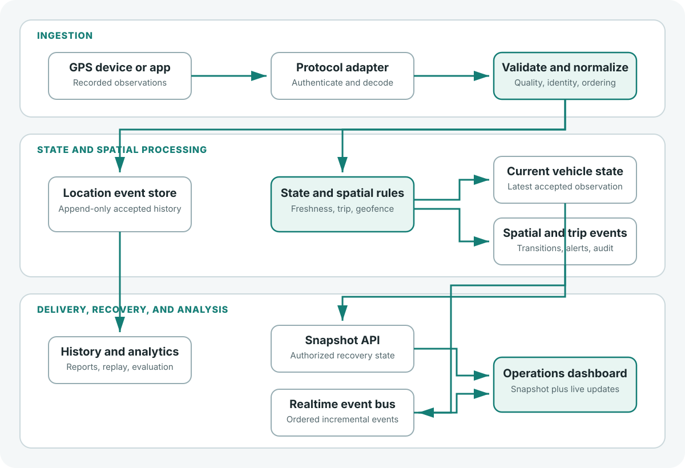

A moving dot is not a vehicle tracking system. It is only a visualization of the most recent location received by a browser.
An operational tracking platform must answer harder questions: How recent is this position? Is it trustworthy? Which trip does it belong to? Has the vehicle entered a service area? Should anyone be alerted? What happens when connectivity is lost?
These questions move the engineering problem beyond mapping into the design of a reliable, event-driven geospatial system. The following architecture applies to fleet, logistics, transit, and field-operation tracking without depending on a private deployment.
1. Start with operational requirements
Before choosing a mapping library or GPS protocol, define the expected system behavior.
| Concern | Engineering question | Example decision |
|---|---|---|
| Freshness | When is a vehicle considered online? | Use a configurable threshold based on server receipt time |
| Accuracy | Can a position trigger an event? | Consider accuracy, speed, age, and plausibility |
| Latency | How quickly should a valid update reach viewers? | Set and measure an end-to-end objective |
| History | Which events must remain queryable? | Store append-only history with a retention policy |
| State | What is the vehicle doing? | Separate trip and operational state from coordinates |
| Security | Who may see this vehicle? | Authorize by tenant, vehicle, and role |
| Recovery | What happens after a disconnect? | Restore a snapshot, then resume incremental updates |
Key design principle: Location is an observation; operational status is a conclusion derived from observations and business rules.
2. Reference architecture

- Ingestion: receive observations from devices, mobile applications, or protocol gateways.
- Processing: validate measurements and compute the latest trusted state.
- Distribution: stream authorized changes without making every viewer poll the database.
- Analysis: query movement history and spatial events independently of the live interface.
3. Normalize incoming GPS events
Devices use different transports and payloads. Normalize them into one internal event model before spatial or operational processing.
{
"tenantId": "tenant-example",
"vehicleId": "vehicle-042",
"deviceId": "tracker-042",
"recordedAt": "2026-10-16T10:15:24Z",
"receivedAt": "2026-10-16T10:15:26Z",
"latitude": 31.905,
"longitude": 35.205,
"speedKph": 36.2,
"headingDeg": 84,
"accuracyMeters": 12,
"eventId": "tracker-042:184902"
}These values are synthetic. Keep both device time and server receipt time: one describes when the observation was made; the other supports freshness, ingestion-latency measurement, and disconnect diagnosis.
- Validate latitude, longitude, timestamps, ranges, and identifiers.
- Bind tenant and device identity to authenticated server context.
- Recognize duplicates through a stable event ID when available.
- Prevent late messages from replacing newer current state.
- Represent missing accuracy as unknown rather than zero.
4. Model position history and current state
Historical queries and operational queries have different access patterns. Use append-only events for history and a separate current state record for the latest accepted position.
CREATE EXTENSION IF NOT EXISTS postgis;
CREATE TABLE vehicle_position_events (
event_id TEXT NOT NULL,
tenant_id UUID NOT NULL,
vehicle_id UUID NOT NULL,
recorded_at TIMESTAMPTZ NOT NULL,
received_at TIMESTAMPTZ NOT NULL DEFAULT now(),
position GEOGRAPHY(POINT, 4326) NOT NULL,
speed_kph NUMERIC(7, 2),
accuracy_m NUMERIC(8, 2),
PRIMARY KEY (tenant_id, event_id)
);
CREATE INDEX vehicle_position_events_vehicle_time_idx
ON vehicle_position_events (tenant_id, vehicle_id, recorded_at DESC);
CREATE INDEX vehicle_position_events_position_gix
ON vehicle_position_events USING GIST (position);
CREATE TABLE vehicle_current_state (
tenant_id UUID NOT NULL,
vehicle_id UUID NOT NULL,
event_id TEXT NOT NULL,
recorded_at TIMESTAMPTZ NOT NULL,
received_at TIMESTAMPTZ NOT NULL,
position GEOGRAPHY(POINT, 4326) NOT NULL,
speed_kph NUMERIC(7, 2),
PRIMARY KEY (tenant_id, vehicle_id)
);Indexes improve particular reads but increase write and storage costs. Partitioning, retention, and archival should follow measured volume and query behavior rather than a generic threshold.
The following illustrative transaction inserts immutable history idempotently and updates current state only when the event is new and newer than the stored state:
BEGIN;
WITH accepted_event AS (
INSERT INTO vehicle_position_events (
event_id, tenant_id, vehicle_id,
recorded_at, received_at, position,
speed_kph, accuracy_m
)
VALUES (
$3, $1, $2, $4, $5,
ST_SetSRID(ST_MakePoint($6, $7), 4326)::geography,
$8, $9
)
ON CONFLICT (tenant_id, event_id) DO NOTHING
RETURNING event_id, tenant_id, vehicle_id,
recorded_at, received_at, position, speed_kph
)
INSERT INTO vehicle_current_state (
tenant_id, vehicle_id, event_id,
recorded_at, received_at, position, speed_kph
)
SELECT tenant_id, vehicle_id, event_id,
recorded_at, received_at, position, speed_kph
FROM accepted_event
ON CONFLICT (tenant_id, vehicle_id)
DO UPDATE SET
event_id = EXCLUDED.event_id,
recorded_at = EXCLUDED.recorded_at,
received_at = EXCLUDED.received_at,
position = EXCLUDED.position,
speed_kph = EXCLUDED.speed_kph
WHERE (EXCLUDED.recorded_at, EXCLUDED.event_id) >
(vehicle_current_state.recorded_at, vehicle_current_state.event_id);
COMMIT;
Parameters $6 and $7 are longitude and
latitude, matching ST_MakePoint(x, y). The common table
expression prevents a duplicate history event from driving another
state update. The event ID must provide a deterministic tie-break,
or the design needs a server-controlled sequence.
5. Track freshness separately from motion
Zero speed does not mean the tracker is offline. An old coordinate should not appear live merely because it was the latest one received.
| State | Meaning |
|---|---|
| Live | A recent accepted observation is within the configured freshness window |
| Stale | The last accepted observation is older than that window |
| Unknown | No reliable position has been established |
| Parked / Moving | Motion interpretation is calculated independently |
Select thresholds from device frequency, connectivity, operational risk, and expected delay. Display the last update time instead of relying only on marker color.
6. Use adaptive reporting intentionally
Sending coordinates every second increases cellular traffic, battery use, write volume, and processing work. A configurable starting policy might look like this:
| Operating condition | Example interval |
|---|---|
| Fast movement | 5 seconds |
| Slow movement | 10 seconds |
| Stationary | 30 seconds |
These are examples, not defaults. Devices may also report ignition, arrival, emergency, route deviation, or geofence transitions, and the platform must tolerate irregular or delayed uploads.
7. Deliver incremental updates with WebSockets
A live dashboard commonly uses two stages:
- Fetch an authorized snapshot of current vehicle state.
- Subscribe to authorized incremental changes over WebSockets.
// Illustrative Socket.IO client code.
const socket = io("https://tracking.example.com", {
auth: { token: accessToken }
});
socket.on("vehicle:position", (event) => {
if (!isNewerEvent(event)) return;
updateVehicleMarker(event.vehicleId, [event.longitude, event.latitude]);
updateVehicleFreshness(event.vehicleId, event.recordedAt);
});
socket.on("connect", () => {
refreshAuthorizedSnapshot();
});The server must authenticate the socket and authorize every resource subscription. A client-provided tenant ID or room name must never grant access. WebSockets provide transport, not durable delivery; reconnect with a fresh snapshot or a supported server cursor and reject delayed events using ordering metadata.
8. Convert coordinates into spatial events
Operational geography includes depots, stops, routes, districts, service boundaries, and restricted areas. A circular geofence can use a distance predicate:
SELECT ST_DWithin(
ST_SetSRID(ST_MakePoint(:longitude, :latitude), 4326)::geography,
ST_SetSRID(ST_MakePoint(:center_lon, :center_lat), 4326)::geography,
:radius_meters
) AS inside_geofence;
With geography, the distance is expressed in meters.
Production rules also need transition state, dwell time, hysteresis,
accuracy filtering, and cooldowns to control boundary jitter and
repeated alerts.
9. Estimate arrival times with uncertainty
Straight-line distance divided by current speed is rarely a dependable ETA. Prefer a route graph, the vehicle's projected position, remaining route distance, realistic speeds, dwell time, and appropriately governed historical travel times.
Explanatory baseline only; not a production prediction model.
Avoid false precision, show uncertainty where feasible, and explain when no reliable ETA is available.
10. Multi-tenant security and resilience
Location data can reveal sensitive movement. Collect only what the service needs, restrict it to authorized users, and define retention.
- Derive tenant scope from verified server-side identity.
- Authorize vehicles, trips, history, and subscriptions individually.
- Use PostgreSQL Row-Level Security where connection handling can preserve safe tenant context.
- Encrypt transport and support device credential rotation and revocation.
- Record meaningful administrative and security events without logging secrets.
- Define retries, idempotency, queue backpressure, and reconnect behavior.
11. Measure the system, not just the map
| Metric | What it reveals |
|---|---|
| Ingestion success rate | Whether device messages reach the platform |
| Device-to-server delay | Connectivity and clock-related problems |
| Server-to-client delay | Realtime distribution performance |
| Duplicate / invalid rate | Data quality and protocol problems |
| Stale vehicle count | Tracking coverage and device health |
| Processing backlog | Pressure during bursts |
| False geofence alerts | Spatial rule quality |
| ETA error by horizon | Prediction reliability |
Test with simulation and authorized devices. Include out-of-order timestamps, duplicates, high GPS error, network loss, reconnect storms, cross-tenant access attempts, and burst traffic.
12. Engineering trade-offs
There is no universal stack. PostgreSQL/PostGIS is effective when transactional records and spatial analysis belong together. A broker can decouple ingestion from processing but may be unnecessary before volume or failure isolation requires it. WebSockets suit active dashboards; HTTP remains useful for snapshots, history, and recovery.
Reliable ingestion accurate current state secure live delivery spatial events analytics and prediction
13. Limitations and failure modes
This is a vendor-neutral reference architecture, not a measured production deployment. It does not prescribe universal reporting intervals, queue technology, partition thresholds, retention, or an ETA model.
- Device clocks may drift or reset; ordering cannot depend on device time alone.
- Devices may omit or incorrectly reuse event identifiers.
- Reconnect storms can overload snapshot APIs and gateways.
- GPS jitter can create false boundary transitions.
- Recovery may temporarily produce duplicate or delayed messages.
- Unsafe connection pooling can lose tenant context.
- ETA quality degrades when reality diverges from the modeled network.
Validate these behaviors using realistic volumes, synthetic fault injection, and authorized field tests before treating the design as production-ready.
Conclusion
The difficult part of real-time vehicle tracking is not placing a marker on a map. It is converting unreliable observations into trusted operational state, distributing that state securely, and making spatial events actionable.
Separating ingestion, history, current state, distribution, and spatial rules gives the platform clear recovery boundaries and a practical path from visualization to operational intelligence.
References
- PostGIS:
ST_MakePoint— point construction and longitude/latitude order. - PostGIS:
ST_DWithin— indexed distance predicates and geography units. - PostgreSQL:
INSERT— conflict handling and atomic upserts. - PostgreSQL: Row Security Policies — database-enforced row access.
- RFC 6455: The WebSocket Protocol — protocol and connection model.
- OWASP WebSocket Security Cheat Sheet — authentication, authorization, logging, and denial-of-service considerations.